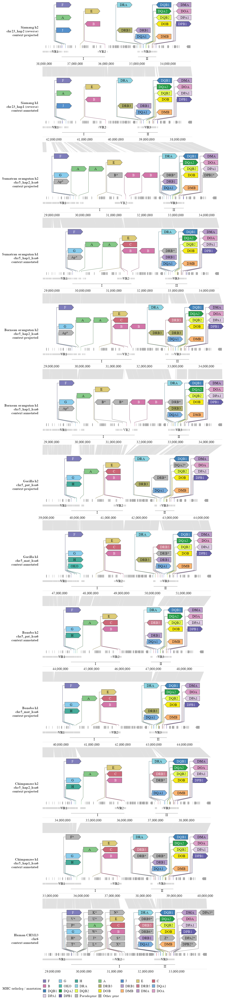
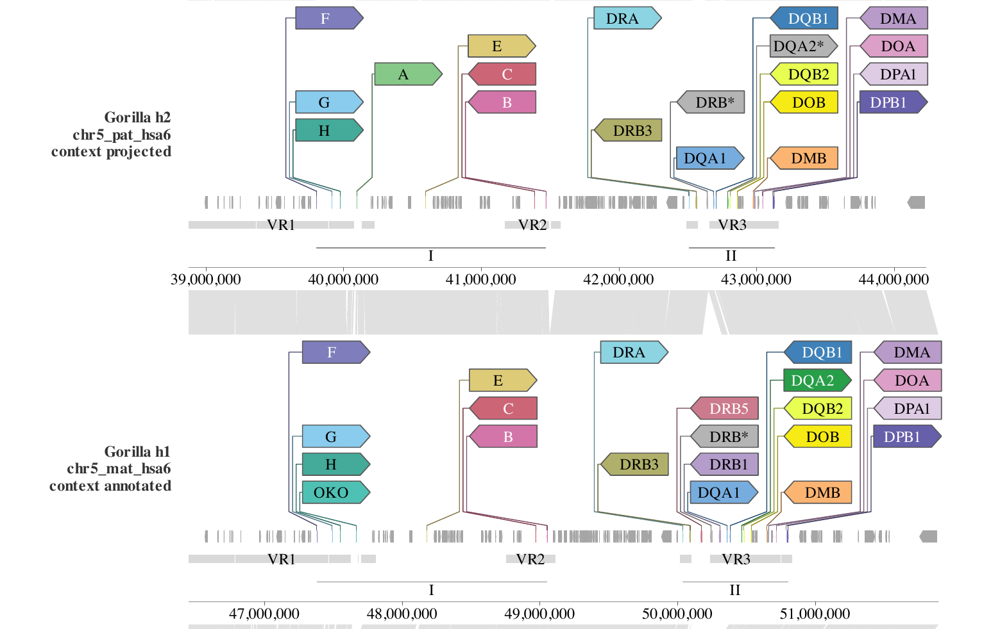
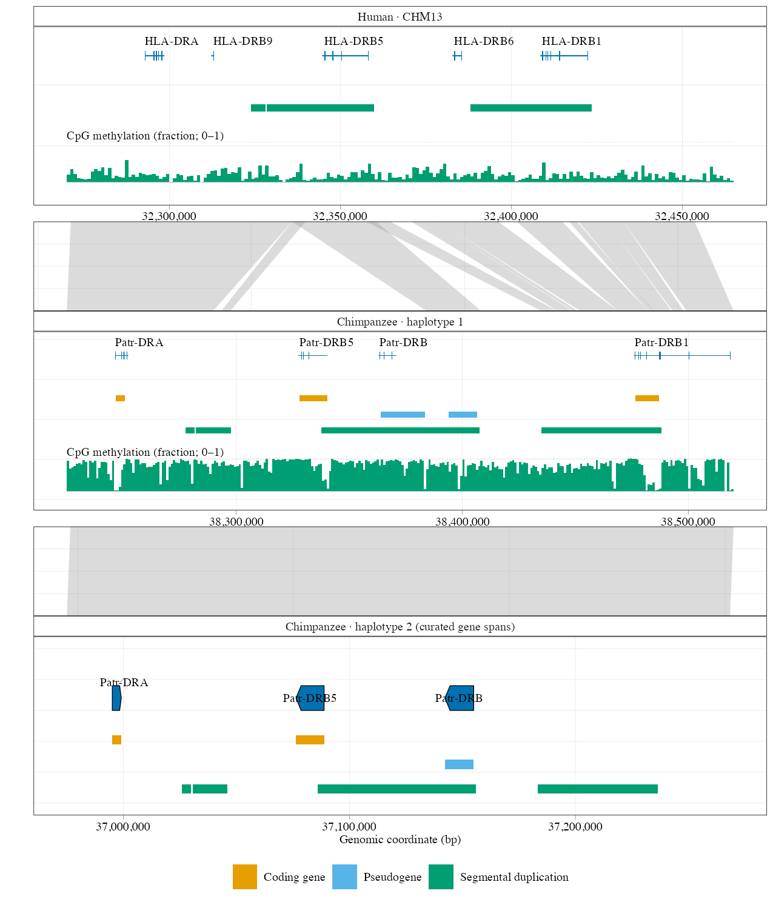

Continuous MHC comparison across ape haplotypes
Source:vignettes/mhc-continuous-demo.Rmd
mhc-continuous-demo.RmdThis article summarizes the presentation code behind the continuous MHC comparison and shows the final rendered figure. The view recombines the gene identity and status information of Extended Data Fig. 3a/b with the continuous region and alignment design of Fig. 3c in Yoo et al. (2025). It is a source-backed reconstruction, not a pixel reproduction of the published figure.
The comparison places MHC class I, the intervening region and class II on one continuous native-coordinate track per haplotype. It contains 13 annotation tracks (human CHM13 plus both haplotypes of six ape species), 12 adjacent nucleotide-link panels, 285 curated MHC genes and a common base-pair scale. Every track keeps its own native coordinate axis; no track is stretched to a common length and no separate class I / class II origins are introduced.

The final continuous MHC comparison, exported as a 180 x 818.81 mm vector figure. The PNG preview is shown here; the PDF in data-raw/ape_paper/results/mhc_continuous/figures/ retains vector text and line work.

Class II detail for the two gorilla haplotypes. Small arrows retain the curated native span; the enlarged heads provide readable labels and direction on six shared rows.
What the figure encodes
-
13 annotation tracks. Human CHM13 h1, then both
haplotypes of chimpanzee, bonobo, gorilla, Bornean orangutan, Sumatran
orangutan and siamang. The human window is the reconstructed 5,309,336
bp CHM13 chr6 interval
[28,669,878, 33,979,214)(BED0), which rounds to the 5.31 Mb quoted in the source caption. - 12 link panels. Each panel aligns one adjacent pair of haplotypes. The ribbons are regenerated ungapped nucleotide blocks, split at indels of at least 1 kb; they are not the unavailable original Fig. 3c plot data.
- 285 curated MHC genes. Each gene appears twice: as a small arrow using its exact curated native span and source ortholog color, and as an enlarged directional head at the span midpoint. Pseudogene heads stay grey with an asterisk.
- 961 projected context models and 2,320 grey context arrows. Released annotations are drawn directly; the six haplotypes without a released annotation receive explicitly labelled same-species Liftoff projections. Nine complete models remain unresolved and are not called absent.
- Variable regions and class spans. VR1-VR3 share one lane below the gene anchors; class I/II spans underline the observed gene extents. There are no tree or topology panels.
The presentation pipeline
The renderer is a single script,
data-raw/ape_paper/render_mhc_continuous.R. It reads
bounded, tracked inputs, builds a SynSpecies object, draws
the layers, measures the physical layout, and writes both a PDF and a
PNG.
1. Inputs
B <- "data-raw/ape_paper/results/mhc_continuous"
windows <- read.delim(file.path(B, "windows.tsv"))
links <- read.delim(file.path(B, "links.tsv"))
regions <- read.delim(file.path(B, "discordant_regions.tsv"))
models <- read.delim(file.path(B, "gene_models_with_recovered_context/models.tsv"))
exons <- read.delim(file.path(B, "gene_models_with_recovered_context/exons.tsv"))
mhc <- read.delim("data-raw/ape_paper/results/mhc_full/genes.tsv")windows.tsv defines each track’s native start, end,
length and orientation. links.tsv holds the regenerated
alignment blocks with their original PAF row references.
models.tsv and exons.tsv supply the
representative source transcripts and their supporting exon records;
mhc_full/genes.tsv is the curated 285-record MHC table used
for the heads and native arrows.
2. One native-to-display geometry
transform_native <- function(d, a, b, trackcol = "track") {
z <- windows[match(d[[trackcol]], windows$track), ]
lo <- pmax(d[[a]], z$start0)
hi <- pmin(d[[b]], z$end0)
d$xmin <- ifelse(z$orientation == "+", lo - z$start0, z$end0 - hi)
d$xmax <- ifelse(z$orientation == "+", hi - z$start0, z$end0 - lo)
d
}
max_bp <- max(windows$length) # shared bp-to-display scale for every trackPlus-oriented tracks are translated from their interval start;
reverse-oriented siamang is reflected from its interval end. Every track
is mapped into the same [0, max_bp] display range, so a
base pair occupies the same horizontal distance everywhere. Native
coordinates remain in all source and audit tables.
3. Build the Syn-aware panels
sp <- SynSpecies(name = "continuous_MHC")
for (id in windows$track) {
# the script writes a tiny curated GFF from the MHC spans for this track
sp <- add_individual(
sp,
load_annotation(SynIndividual(id = id, annotation_file = gff_for(id),
annotation_format = "gff"))
)
}
for (i in seq_len(nrow(windows) - 1L)) {
sp <- add_pairwise_alignment(sp, SynPairAlignment(
paste(windows$track[i], windows$track[i + 1L], sep = "__"),
target_individual = windows$track[i],
query_individual = windows$track[i + 1L],
data = links_for_pair(i)
))
}
sp <- store_chain_layout(sp, free = list(x = TRUE, y = TRUE))The per-track GFFs carry the curated MHC spans; the full context
models are drawn as ordinary geom_gene() data. One
SynPairAlignment per adjacent pair gives the 12 link
panels, and the stored chain layout keeps every track on the same
display coordinate system.
4. Draw the layers
p <- ggexon(sp) +
# grey source context genes
geom_gene(
data = context_arrows,
aes(xmin = xmin, xmax = xmax, ymin = -0.5, transcripts = transcripts,
strand = strand, track = track, fill = kind),
exon_height = 0.5, colour = NA
) +
# small arrows at the exact curated MHC spans
geom_gene(
data = native_mhc_arrows,
aes(xmin = xmin, xmax = xmax, ymin = -0.5, transcripts = transcripts,
strand = strand, track = track, fill = I(ortholog_fill)),
exon_height = 0.5, show.legend = FALSE
) +
# enlarged, labelled heads on six shared rows
geom_gene_lollipop(
data = mhc,
aes(x = true_midpoint, y = 0, strand = display_oriented_strand,
label = gene_label, fill = kind, track = track, head_row = head_row),
headroom = 8, head_layout = "columns", family = "Times"
) +
# one ribbon layer per adjacent pair
geom_nuclink(alignment = pair_names[1], fill = "grey60", alpha = 0.3) +
# VR1-VR3 lane and class I/II spans
geom_rect(
data = regions,
aes(xmin = xmin, xmax = xmax, ymin = ymin, ymax = ymax),
fill = "grey85"
) +
facet_genomics(
vars(track), scales = "free", ncol = 1, strip.position = "left",
link_panel_height = 0.35
) +
scale_panel_annotation("free_y") +
theme_ggexon_track(base_family = "Times", base_size = 8) +
theme_ggexon_side_strips("left", base_size = 8)The exact script repeats the ribbon layer for all 12 pairs and
supplies the measured head geometry (width, height, padding, tip, stem,
fan and lane parameters). Source ortholog colors from
colors.txt override the default palette so the small native
arrows keep the original identity colors.
5. Measure the physical layout
The figure is 180 mm wide but its height cannot be fixed in advance:
each MHC head contains a label whose rendered width depends on the font
and the number of columns. The renderer therefore draws the gtable once
on a roomy 1000 mm PDF and records every head’s device position through
the layout_callback of geom_gene_lollipop().
It then assigns each annotation panel exactly the height its heads need
and gives every link panel a fixed 8 mm.
Native axes are rebuilt at the same time. The default bottom axis of each annotation panel is replaced with ticks in that track’s own one-based assembly coordinates; reverse-oriented tracks count down. Because the axis grobs are positioned through the shared display geometry, the tick spacing still proves the common bp scale.
6. Export and self-check
built <- ggexon_build(p)
tab <- ggexon_gtable(built)
# axes replaced with native per-track coordinates here; panel heights measured
ggsave("mhc_continuous.pdf", tab, width = 180, height = 818.81,
units = "mm", device = cairo_pdf, bg = "white")
ggsave("mhc_continuous.png", tab, width = 180, height = 818.81,
units = "mm", dpi = 150, bg = "white")The script fails loudly if the built object does not match the intended design. Its assertions and exported QC tables check, among other things:
- 13 annotation panels, 12 link panels, no coverage panel;
- one identical bp-per-axis-unit value across all annotation scales;
- 285 heads at the true midpoints, with the recorded strand, label and row;
- 624 ribbon blocks, four vertices per block, correct target/query ownership;
- the shared VR lane, panel heights, figure dimensions and axis round-trips.
The QC outputs are written beside the figure as
common-bp-scale-qc.tsv,
native-geometry-qc.tsv, native-axis-qc.tsv,
annotation-height-qc.tsv, link-qc.tsv,
layout-qc.tsv and figure-dimensions.tsv,
together with the plotted tables.
Reproducing the figure
The bounded inputs and the rendered figure are tracked under
data-raw/ape_paper/results/mhc_continuous/. From the
repository root:
That command uses the final merged inputs and writes both figure
formats and the QC tables. Rebuilding the inputs from raw sources
additionally requires the bounded fetch, Liftoff projection, minimap2
and recovery steps documented in
data-raw/ape_paper/results/mhc_continuous/README.md.
data-raw/ is source material and is not installed with the
package, so this vignette embeds the final PNG preview instead of
re-running the renderer.
Earlier MHC views
The repository also keeps two earlier views in the same source directory:
-
data-raw/ape_paper/results/figures/mhc.pdfis a detailed DR-region view with actual human/chimpanzee nucleotide links, curated functionality intervals and CpG methylation below the gene models. -
data-raw/ape_paper/results/immune_atlas/MHC_I.pngandMHC_II.png(and the*_all_speciesvariants) are the earlier class I / class II atlas views. They use locus-relative coordinates and are not the continuous revision.

The earlier detailed DR-region view (mhc.pdf). CpG methylation is drawn below the gene models and the links are the actual aligned blocks.
Reading notes
- Empty head slots are layout vacancies, not evidence that a gene is absent. Occupied slots are read top to bottom within a column, then left to right.
- Projected context layers are visualization context, not a complete validated alternate-haplotype gene catalog. Projection status is shown in each strip, and unresolved loci are not converted to absence calls.
- Pseudogene asterisks and functional statuses come from the source annotation, not from experimental validation.
- Gene and annotation counts have different ascertainment across released and projected tracks and should not be read as gene gain or loss.
- The accession boundaries, the 5.31 Mb extent and the link regeneration are documented reconstructions; see the source README for the exact rules and residual uncertainty.